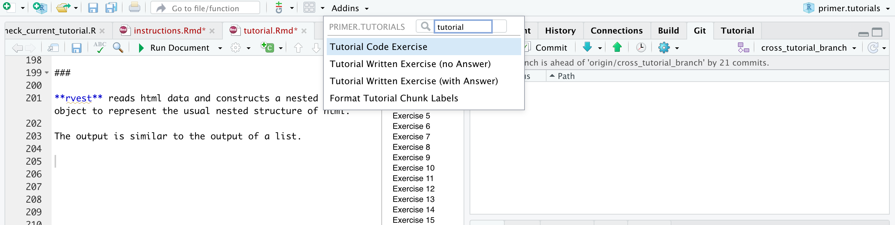

Addins
We have provided four additions to the RStudio Addins menu: “Tutorial Code Exercise”, “Tutorial Written Exercise (with Answer)”, “Tutorial Written Exercise (no Answer)” and “Format Tutorial Chunk Labels.” Give them a try! The first three each insert the skeleton for the next exercise, featuring all the key component parts. It even takes a guess at the correct exercise number. The “Format Tutorial Chunk Labels” Addin is the most useful. Always run it before testing your tutorial. It ensures that all the Exercises are sequentially numbered and that all the code chunk names are correct and unique.
You can find the addins in the “Addins” tab on the top toolbar of RStudio. Please make sure that your cursor is located at the point at which you want to insert the new Exercise.

Tutorial Code Exercise
It creates a new code exercise skeleton with auto-generated chunk id and exercise title.
### Exercise 7
```{r exercises-7, exercise = TRUE}
```
<button onclick = "transfer_code(this)">Copy previous code</button>
```{r exercises-7-hint, eval = FALSE}
```
###Tutorial Written Exercise (with and without answers)
Both create similar exercise structures with auto-generated chunk id
and exercise title. The difference is that the
question_text() options are filled in differently.
Written Exercise with Answer:
### Exercise 8
```{r exercises-8}
question_text(NULL,
message = "Place correct answer here.",
answer(NULL, correct = TRUE),
allow_retry = FALSE,
incorrect = NULL,
rows = 6)
```
###Written Exercise without Answer:
### Exercise 9
```{r exercises-9}
question_text(NULL,
answer(NULL, correct = TRUE),
allow_retry = TRUE,
try_again_button = "Edit Answer",
incorrect = NULL,
rows = 3)
```
###Format Tutorial Chunk Labels
An addin that formats all the code chunk labels in the current Rmd.
It formats the labels of the code and written exercise code chunks as well as the hints.
Limitations:
It doesn’t work well with the `r` that shows the entire code chunk
The code chunk labels (derived from your section titles) have a hard cutoff at 20 characters. So please make sure that your Section Titles are different somewhere in the first 20 characters (including spaces).